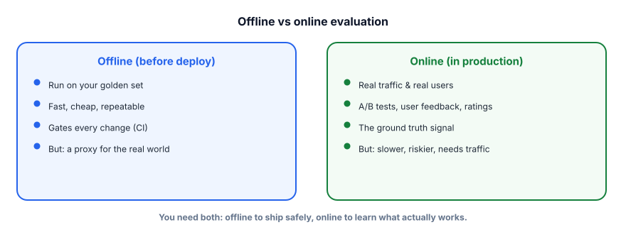

Offline vs online evals
Your golden set tells you a change is good before you ship. Real users tell you if it’s actually good after you ship. Mature teams use both — and know the gap between them is where surprises live.
Two complementary measurements
So far we’ve done offline eval: run the system on a fixed golden set, score it, decide. It’s fast, cheap, and repeatable — perfect for gating changes. But a golden set is a proxy: it’s your best guess at what real usage looks like, and it can’t capture everything (new query types, real user behavior, edge cases you didn’t imagine). Online eval measures the system on real production traffic — via A/B tests, user feedback, and outcome metrics. It’s the ground truth, but it’s slower, needs live traffic, and risks exposing users to a worse version.

Offline evaluation scores the system on a fixed dataset (your golden set) before deployment — fast, repeatable, cheap. Online evaluation measures real production behavior: an A/B test sends some users to the new version and compares outcomes; user feedback (thumbs up/down, ratings, corrections) and outcome metrics (task completion, resolution rate, retention) reveal true impact. Offline is a proxy; online is ground truth.
What online signals look like
| Signal | What it tells you | Watch out |
|---|---|---|
| A/B test | Did the new version improve a real metric vs the old? | Needs enough traffic for significance; pick the metric carefully |
| Thumbs / ratings | Direct quality feedback per response | Sparse and biased (mostly unhappy users click) |
| Implicit signals | Did they accept the answer, retry, escalate, churn? | Noisy; correlate, don’t over-interpret single events |
| Guardrail metrics | Did latency/cost/error rate stay healthy? | A quality win that tanks latency isn’t a win |
Online eval starts with logging the right things per request so you can measure real outcomes. No special service needed to begin.
import json, time
def log_interaction(request_id, version, query, answer, latency_ms):
record = {
"id": request_id, "version": version, # which variant (for A/B)
"query": query, "answer": answer,
"latency_ms": latency_ms, "ts": time.time(),
"feedback": None, # filled in when the user reacts
}
append_to_log(record)
def record_feedback(request_id, thumb): # user clicked 👍/👎
update_log(request_id, {"feedback": thumb})
# later: compare versions on real traffic
# win_rate(version="B") vs win_rate(version="A") → did B actually do better?This is the raw material of online eval: every interaction tagged with its version, latency, and (when available) user feedback, so you can compare variants on the only data that ultimately matters — real usage.
- Offline (golden set) is fast, cheap, repeatable — use it to gate every change before shipping.
- Online (A/B, feedback, outcomes) is the ground truth — use it to learn what actually works.
- Offline is a proxy; the offline–online gap is where surprises (and learning) live.
- Watch guardrail metrics (latency, cost, errors) alongside quality — a slow “better” answer isn’t better.
- Feed online failures back into the golden set so offline gets more representative over time.
A prompt change improves your offline golden-set score by 8%, so you ship to 100% of users immediately. Why is that risky?
1. Give one thing offline evals catch that online can’t, and one thing online catches that offline can’t.
2. Why are thumbs-up/down ratings a biased signal, and how would you supplement them?
3. You ship a change that improves answer quality but quietly doubles latency. Which eval should have caught it, and how?
▸ Show solutions & reasoning
1. Offline catches regressions before any user is affected (cheap, repeatable, on known cases) — online can’t prevent harm before exposure. Online catches what your golden set never imagined — novel query types, real user behavior, and true outcomes (did they actually get helped?) — which offline, being a fixed proxy, structurally can’t see. They’re complementary by design.
2. Ratings are sparse and self-selected: most users don’t click, and those who do skew toward extremes (especially the frustrated). So they over-represent unhappy cases and miss the silent majority. Supplement with implicit signals (did they accept the answer, retry, escalate, complete the task?) and periodic structured surveys or human review of sampled interactions — triangulate rather than trust one noisy signal.
3. A guardrail metric on latency — measured both offline (you can time responses on the golden set) and online (monitor p95 latency per version). Quality evals alone would have shown a win and missed the regression. Always pair quality metrics with cost/latency/error guardrails so an improvement on one axis can’t silently wreck another (this is exactly Track 8’s concern).
The magic happens when offline and online feed each other. Online surfaces reality — a cluster of queries your bot handles badly, a new way users phrase things, an edge case you never tested. You harvest those failures, label them, and add them to the golden set. Now your offline eval is more representative, so the next change is gated against the real problems, and you catch them before shipping. Over months this loop drags your proxy ever closer to reality, which is why teams with strong observability (Lesson 6.5) improve so much faster: they have a firehose of real failures to learn from.
A few practical disciplines. Run A/B tests with a clear primary metric chosen in advance (resolution rate, task success, accepted-answer rate) and enough traffic to reach significance — don’t peek and stop early. Watch guardrail metrics (latency, cost, error/refusal rates) so a quality win can’t hide a serious regression. And remember the asymmetry: offline lets you fail safely and cheaply, online lets you learn truthfully but at the cost of real exposure — so the standard flow is offline gate → small online rollout → full rollout, never straight to 100%. Master this and “shipping an LLM change” becomes a controlled, measured process instead of a leap of faith.
Both offline and online eval depend on seeing what your system actually did on each request. That visibility is observability. Next: tracing & observability.